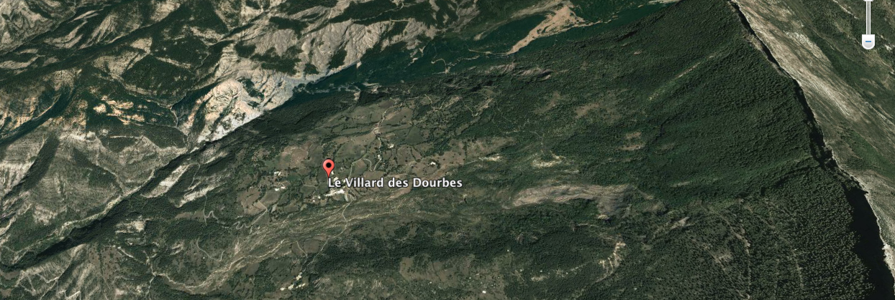
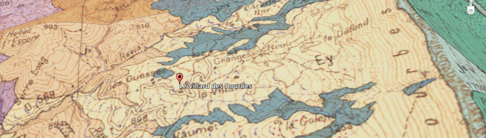

QCM : Les formations de versant - Auto-évaluation
Roches et Gravité: ça remue !
À partir des documents présentés, répondre aux questions.

Vue cartographique IGN

Vue aérienne Google Maps

Carte géologique au 1/50 000 (Ey: éboulis; j2-4: Terres Noires)